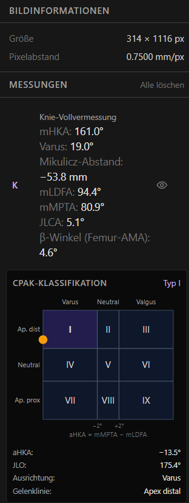
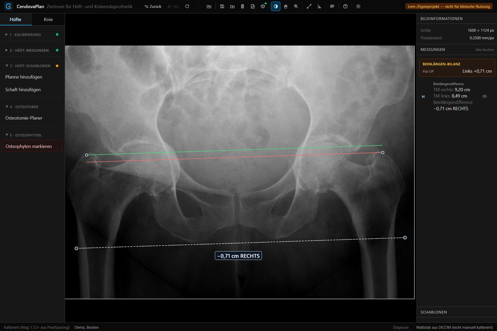

Digitale OP-Planung für Hüfte und Knie — komplett lokal.
CendovaPlan vermisst Ganzbein- und Beckenaufnahmen, klassifiziert nach
CPAK, platziert Röntgen-Schablonen und druckt den OP-Aushang — direkt im
Browser, ohne Cloud, ohne Konto. Kostenfrei, quelloffen, ohne Abo —
Patientenbilder verlassen den Rechner nie.
Digitale Endoprothetik-Planung kostet üblicherweise laufende Software-Lizenzen.
CendovaPlan dreht das Modell um: die Software ist frei — und die Schablonen gibt es beim
Implantat-Hersteller.
◇
Kostenfrei & Open SourceKein Abo, keine Lizenzgebühren, kein Konto. Der komplette Quellcode ist offen (Apache-2.0) und nachvollziehbar — teure Lizenzen kommerzieller Planungssoftware können entfallen.
▦
Schablonen direkt vom HerstellerOffizielle Röntgen-Schablonen erhalten orthopädisch tätige Ärztinnen und Ärzte in der Regel kostenlos von ihrem Implantat-Hersteller. Einmal als lokales Paket importiert, stehen sie in der Planung bereit — CendovaPlan selbst liefert bewusst keine Hersteller-Schablonen aus.
▶
Sofort einsatzbereitInstallieren, DICOM öffnen, planen: das Tool funktioniert direkt — komplett lokal im Browser, ohne Server-Anbindung und ohne Freischaltung. Oder gleich die Demo im Browser ausprobieren.
So funktioniert es
Von null zur fertigen Planung in vier Schritten.
1
InstallierenEin-Klick-Installer für Windows und macOS — Voraussetzungen wie Node.js und Git richtet er selbst ein. Zur Anleitung →
2
Schablonen importierenSchablonen-Paket beim Implantat-Hersteller beziehen und einmalig über das Paket-Symbol in der Kopfzeile importieren — es bleibt lokal auf dem Rechner.
3
Kalibrieren & vermessenDICOM-Aufnahme öffnen, über Kalibrierkugel oder Maßstab kalibrieren — die Vollvermessung (mHKA, mLDFA, mMPTA, JLCA, CPAK) führt Punkt für Punkt.
4
Planen & druckenSchablone platzieren und mechanisch ausrichten, Größen vergleichen, Resektionen ablesen — und den OP-Aushang als PDF drucken.
Funktionen
Vom kalibrierten Röntgenbild zum fertigen OP-Aushang — ein Workflow, vier Bausteine.
⌖
Vollvermessung & CPAK17-Punkte-Workflow: mHKA, mLDFA, mMPTA, JLCA — mit CPAK-Matrix nach MacDessi und Live-Aktualisierung bei der Implantat-Positionierung.
▦
Schablonen-PlanungHüfte und Knie templatieren, mechanisch ausrichten, Resektionen ablesen — eigene Schablonen-Pakete lassen sich lokal importieren.
⎙
OP-Aushang als PDFSeite 1 ist das Poster für den Saal: Bild maximal, Kopfzeile mit CAVE und BLD — drucken, aufhängen, fertig.
⛨
100 % lokalReine Browser-App ohne Server: DICOM rein, PDF raus — kein Upload, kein Konto, DSGVO-freundlich.
Einblicke in die Planung
Authentische Ansichten aus der Anwendung — Knie-Vollvermessung mit
CPAK-Klassifikation an einer Ganzbeinaufnahme und Beinlängen-Bilanz an einer
Beckenübersicht.
AP-Ganzbeinaufnahme mit 17-Punkt-Vollvermessung — mHKA, mLDFA, mMPTA und
JLCA werden automatisch berechnet, die CPAK-Klassifikation aktualisiert sich live.

Messwerte-Panel: Knie-Vollvermessung und CPAK-Klassifikation mit aHKA und JLO.

AP-Beckenübersicht mit Beinlängen-Bilanz: Trochanter-minor-Abstände beidseits,
Beinlängendifferenz prä-OP — die Bilanz führt die geplante Korrektur mit.
Bildnachweis Röntgenaufnahmen: Hellerhoff, Lizenz CC BY-SA
(Ganzbein ·
Beckenübersicht) —
anonymisierte Lehrbilder von Wikimedia Commons, als Demo-DICOM geladen. Keine Patientendaten.
folgtEinblicke in die Schablonen-Planung — Pfanne, Schaft, Osteotomie und
Implantat-Positionierung mit importiertem Schablonen-Paket — werden hier ergänzt.
Ihre Daten bleiben bei Ihnen.
CendovaPlan ist ein reines Frontend ohne Backend: DICOM-Dateien werden im Browser
geöffnet, vermessen und wieder verworfen — es gibt keinen Upload, keine Cloud, keine
Telemetrie und kein Benutzerkonto. Die Anwendung läuft nach der Installation vollständig
auf dem eigenen Rechner; für den Betrieb genügt ein WebGL-fähiger Browser.
CendovaPlan ist ein Lern-, Forschungs- und Demonstrationswerkzeug — kein
Medizinprodukt im Sinne der Verordnung (EU) 2017/745 (MDR) und nicht für die
klinische Anwendung bestimmt. Hersteller-Schablonen sind nicht enthalten — eigene Pakete
lassen sich lokal importieren („bring your own templates“). Der Quellcode ist offen unter
Apache-2.0.